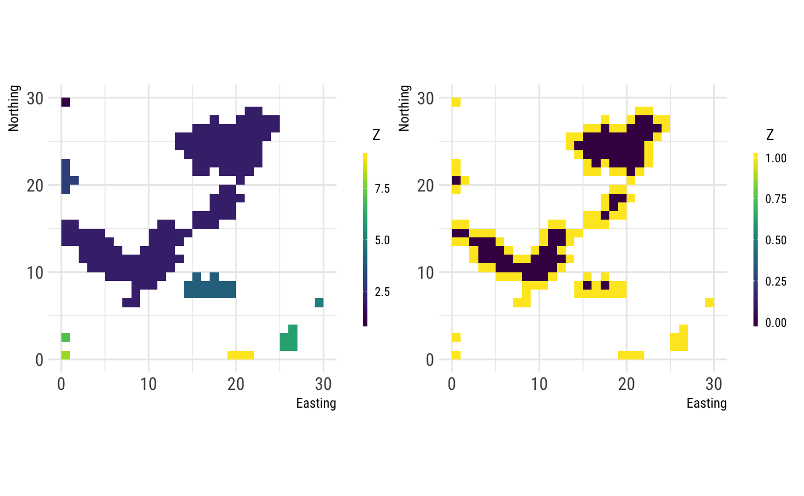

vignettes/articles/comparing_fragstats_landscapemetrics.Rmd
comparing_fragstats_landscapemetrics.Rmdlandscapemetrics re-implements landcsape metrics as they are described in the FRAGSTATS software. Therefore, we compared our results with the results of FRAGSTATS. In the process, we recognized a few differences between the results.
Some metrics in FRAGSTATS are interdependent across scales. Thus, if there is a deviation at the patch level, it propagates through the class- and landscape-level. We list the metrics with deviations at the lowest level.
Unfortunatly, we do not have access to the source code of FRAGSTATS. Therefore, we are not able to finally explain the present differences between the results, nevertheless, we try to guess the most likely reasons.
Firstly, the patch ID is ordered in a different way, most likely due to technical reasons (how connected patches are specified). Therefore, one has to pay attention comparing the results on patch level for FRAGSTATS and landscapemetrics. In order to match the results of the two softwares, we are going to order them from small to big in the following.
All double precision floating point numbers are rounded after the 4th decimal place in FRAGSTATS. Contrastingly, we do not round the numbers. Naturally, this can lead to small deviations between the results.
There are quite a few metrics on class- and landscape-level that summarise patch level metrics (e.g. the mean, standard deviation (sd) or coefficient of variation (cv) of all values belonging to class i). While the results are identical for the single patches and the mean of all patches, there are some slight differences between lanscapemetrics and FRAGSTATS for the standard deviation and the coefficent of variation.
In the following, we are comparing the cv for the patch area. We are including the cv calculate from all patch areas and the acutal output of FRAGSTATS as well as the output of landscapemetrics. Interestingly, the cv calculated from all patches of FRAGSTATS is identical to the cv of landscapemetrics, but the actual result of FRAGSTATS is slightly different.
# function to calculate coefficient of variation
cv <- function(x) {
(sd(x, na.rm = TRUE) /
mean(x, na.rm = TRUE)) * 100
}
# CV calculated from patch values of FRAGSTATS
fragstats_calculated <- fragstats_patch_landscape %>%
group_by(TYPE) %>%
summarise(cv = cv(AREA)) %>%
pull(cv) %>%
sort()
# Output of FRAGSTATS
fragstats_output <- sort(fragstats_class_landscape$AREA_CV)
# Output of landscapemetrics
landscapemetrics_output <- sort(lsm_c_area_cv(landscape)$value)## fragstats_calculated fragstats_output landscapemetrics_output
## 1 165.0134 159.0109 165.0134
## 2 187.7700 162.6136 187.7700
## 3 242.4570 228.5906 242.4570As for the cv, the results for the sd are similiar. The result calculated from all patch areas of FRAGSTATS is identical to the result of landscapemetrics, but not the actual result of FRAGSTATS.
# SD calculated from patch values of FRAGSTATS
fragstats_calculated <- fragstats_patch_landscape %>%
group_by(TYPE) %>%
summarise(sd = sd(AREA)) %>%
pull(sd) %>%
sort()
# Output of FRAGSTATS
fragstats_output <- sort(fragstats_class_landscape$AREA_SD)
# Output of landscapemetrics
landscapemetrics_output <- round(sort(lsm_c_area_sd(landscape)$value), 4)## fragstats_calculated fragstats_output landscapemetrics_output
## 1 0.002852375 0.0027 0.0029
## 2 0.004822200 0.0045 0.0048
## 3 0.022485458 0.0195 0.0225FRAGSTATS defines CIRCLE as following:
[…] CIRCLE equals 1 minus patch area (m2) divided by the area (m2) of the smallest circumscribing circle. […]
According to the definition, for a squared patch the metric should equal CIRCLE = 0.3633802, regardless of the actual patch size (e.g. 1 cell vs. 4-by-4 cells). However, in FRAGSTATS patches containing only one cell equal CIRCLE = 0.
# Calculate patch area, patches with area = 0.0001 --> 1 cell
# area <- lsm_p_area(landscape) %>%
# pull(value) %>%
# sort()
# CIRCLE = 0 for patches containing only one cell
circle_fragstats <-
sort(fragstats_patch_landscape_circle <-
fragstats_patch_landscape$CIRCLE)
circle_landscapemetrics <- lsm_p_circle(landscape) %>%
pull(value) %>%
sort()## circle_fragstats circle_landscapemetrics
## 1 0.0000 0.3144095
## 2 0.0000 0.3633802
## 3 0.0000 0.3633802
## 4 0.0000 0.3633802
## 5 0.0000 0.3633802
## 6 0.0000 0.3633802
## 7 0.3144 0.3633802
## 8 0.3634 0.3633802
## 9 0.4907 0.4907042
## 10 0.4907 0.4907042
## 11 0.4907 0.4907042
## 12 0.5103 0.5102925
## 13 0.5225 0.5225352
## 14 0.5225 0.5225352
## 15 0.5416 0.5416338
## 16 0.5520 0.5520083
## 17 0.5544 0.5543662
## 18 0.5796 0.5795907
## 19 0.6180 0.6180281
## 20 0.6180 0.6180281
## 21 0.6180 0.6180281
## 22 0.6255 0.6255178
## 23 0.6658 0.6657838
## 24 0.6817 0.6816901
## 25 0.6850 0.6849717
## 26 0.7783 0.7783065
## 27 0.8112 0.8112292In FRAGSTATS the core metric is defined as:
[…] CORE equals the area (m2) within the patch that is further than the specified depth-of-edge distance from the patch perimeter, […]
In landscapemetrics the depth-of-edge is fixed to one cell. In other words, all cells with four adjacent neighbours of the same class are defined as core cells. The implementation of the depth-of-edge distance seems to be slightly different in FRAGSTATS, leading to slightly different results for core metrics.
This is a visual aid to help understand how we implemented the core metric. The left plot shows all patches of class 1, the right plot the core area (violet cells) in each patch.
# All patches of class 1
class_1 <- cclabel(landscape)[[1]]
# Core area of all patches, 1 = Edge, 0 = Core
core <- boundaries(class_1, directions = 4)
lsm_c_cai_cv)lsm_c_cai_mn)lsm_c_cai_sd)lsm_c_core_cv)lsm_c_core_mn)lsm_c_core_sd)lsm_c_cpland)lsm_c_dcad)lsm_c_dcore_cv)lsm_c_dcore_mn)lsm_c_dcore_sd)lsm_c_ndca_sd)lsm_c_tca)According to FRAGSTATS the radius of gyration for a patch consisting of only a single cell should equal GYRATE = 0.
[…] GYRATE = 0 when the patch consists of a single cell […]
However, for patches containing a single cell FRAGSTATS returns a value of GYRATE = 0.5.
In the following table, patches with an area of area = 0.0001 consist of only one cell.
# Area of all patches, patches with area = 0.0001 consist of only one cell
area <- lsm_p_area(landscape) %>%
pull(value) %>%
sort()
# Output of FRAGSTATS
gyrate_fragstats <- sort(fragstats_patch_landscape$GYRATE)
# Output of landscapemetrics
gyrate_landscapemetrics <- lsm_p_gyrate(landscape) %>%
pull(value) %>%
sort()## area gyrate_fragstats gyrate_landscapemetrics
## 1 0.0001 0.5000 0.0000000
## 2 0.0001 0.5000 0.0000000
## 3 0.0001 0.5000 0.0000000
## 4 0.0001 0.5000 0.0000000
## 5 0.0001 0.5000 0.0000000
## 6 0.0001 0.5000 0.0000000
## 7 0.0002 0.5000 0.5000000
## 8 0.0002 0.5000 0.5000000
## 9 0.0002 0.6449 0.6540388
## 10 0.0003 0.6449 0.6540388
## 11 0.0003 0.6667 0.6666667
## 12 0.0003 0.6667 0.6666667
## 13 0.0003 0.6667 0.6666667
## 14 0.0003 0.7071 0.7071068
## 15 0.0004 0.7071 0.7071068
## 16 0.0005 0.8493 0.8478015
## 17 0.0005 0.9779 0.9747933
## 18 0.0007 0.9921 1.0001523
## 19 0.0009 1.2400 1.2368243
## 20 0.0010 1.2531 1.2420291
## 21 0.0014 1.6339 1.6314858
## 22 0.0024 2.4917 2.4954894
## 23 0.0035 2.5116 2.5102819
## 24 0.0057 3.1784 3.1706682
## 25 0.0098 6.2767 6.3637330
## 26 0.0148 8.6143 8.5519260
## 27 0.0457 11.2509 11.2363838The documentation of FRAGSTATS defines the perimeter-area ratio the following:
[…] PARA equals the ratio of the patch perimeter (m) to area (m2). […]
Contrastingly, the output of FRAGSTATS gives the result as the ratio of the patch perimeter in meters to area in hectares.
We implemented PARA as documented in the FRAGSTATS manual using square meters. Nevertheless, the differences between the softwares are only based on different units, as shown by converting the FRAGSTATS output to meters per square meters.
# Output of FRAGSTATS
para_fragstats <- sort(fragstats_patch_landscape$PARA)
# Output FRAGSTATS divided by 10000 (convert to m/sqm)
para_fragstats_ha <- para_fragstats / 10000
# Output of landscapemetrics
para_landscapemetrics <- lsm_p_para(landscape) %>%
pull(value) %>%
sort()## para_fragstats para_fragstats_ha para_landscapemetrics
## 1 7017.544 0.7017544 0.7017544
## 2 7614.880 0.7614880 0.7614880
## 3 8367.347 0.8367347 0.8367347
## 4 8783.784 0.8783784 0.8783784
## 5 10857.143 1.0857143 1.0857143
## 6 13333.333 1.3333333 1.3333333
## 7 14285.714 1.4285714 1.4285714
## 8 16000.000 1.6000000 1.6000000
## 9 17142.857 1.7142857 1.7142857
## 10 17777.778 1.7777778 1.7777778
## 11 20000.000 2.0000000 2.0000000
## 12 20000.000 2.0000000 2.0000000
## 13 24000.000 2.4000000 2.4000000
## 14 26666.667 2.6666667 2.6666667
## 15 26666.667 2.6666667 2.6666667
## 16 26666.667 2.6666667 2.6666667
## 17 26666.667 2.6666667 2.6666667
## 18 26666.667 2.6666667 2.6666667
## 19 30000.000 3.0000000 3.0000000
## 20 30000.000 3.0000000 3.0000000
## 21 40000.000 4.0000000 4.0000000
## 22 40000.000 4.0000000 4.0000000
## 23 40000.000 4.0000000 4.0000000
## 24 40000.000 4.0000000 4.0000000
## 25 40000.000 4.0000000 4.0000000
## 26 40000.000 4.0000000 4.0000000
## 27 40000.000 4.0000000 4.0000000McGarigal, K., SA Cushman, and E Ene. 2012. FRAGSTATS v4: Spatial Pattern Analysis Program for Categorical and Continuous Maps. Computer software program produced by the authors at the University of Massachusetts, Amherst. Available at the following website: http://www.umass.edu/landeco/research/fragstats/fragstats.html